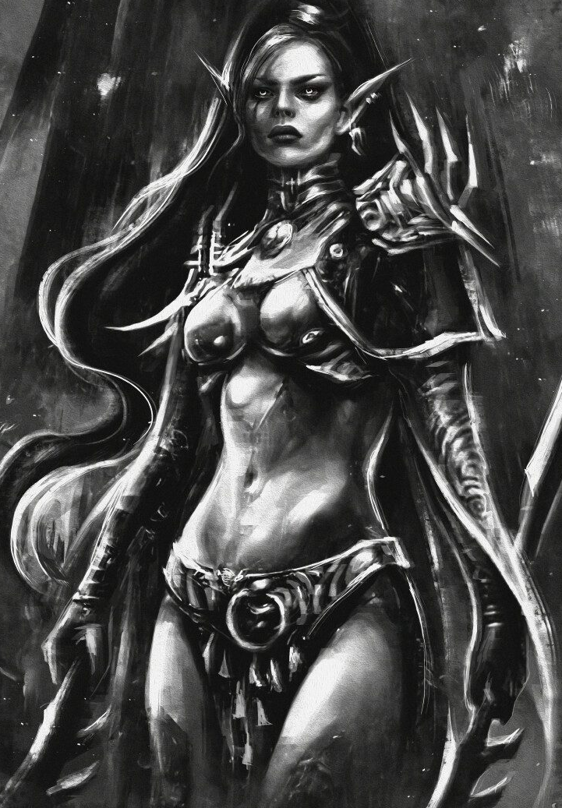

Dossier scellé 999.M41

Les Drukhari ne cherchent ni territoires durables, ni paix armée, ni domination stable. Ils ne bâtissent rien que la souffrance. Ils ne laissent derrière eux ni ordre, ni loi. Seulement des corps ouverts et des mondes vidés.
Ils sont la forme la plus nue de la décadence aeldari. Là où d’autres ont choisi la discipline pour survivre, eux ont plongé plus profondément dans l’abîme. Ils ont fait de la cruauté une ressource.
Leur repaire principal, Commorragh, n’est pas une cité. C’est une plaie. Un réseau de ténèbres caché dans la Toile, hors de toute loi, hors de toute lumière.
Là-bas, la douleur est une monnaie. La chair est une matière première. Les cris ne cessent jamais.
Les Drukhari ne tuent pas vite. Ils prolongent. Ils étirent. Ils transforment chaque vie en une lente agonie contrôlée.
Leurs raids sont rapides, précis, calculés. Ils frappent, enlèvent, disparaissent. Et reviennent.
Leur société est une guerre permanente. Trahison, domination, torture. Rien n’est stable, sauf la certitude que quelqu’un souffre toujours davantage.
Les Haemonculi manipulent la chair comme d’autres sculptent la pierre. Ils ne guérissent pas. Ils transforment.
Sur le champ de bataille, ils ne chargent pas. Ils chassent. Rapides, silencieux, précis.
Ils ne sont pas des bêtes. Ils sont pires. Ils comprennent parfaitement ce qu’ils font.
Fin de l’extrait. Toute présence drukhari doit être considérée comme une menace critique.